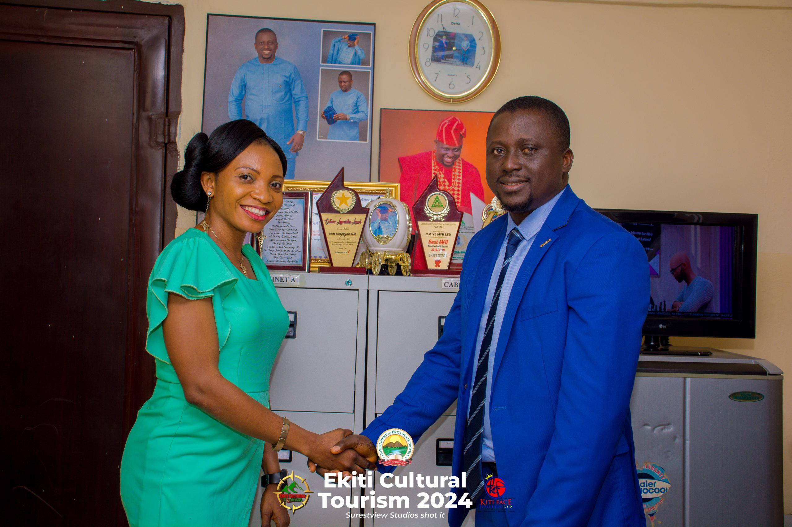

Ekiti Cultural Tourism 2024
Ekiti Cultural Tourism 2024 is aimed to promote the culture, fashion, value of tourism , beautifying the traditional lifestyle of Ekiti Indigenes
Ekiti Cultural Tourism 2024

Ekiti Cultural Tourism 2024 is aimed to promote the culture, fashion, value of tourism , beautifying the traditional lifestyle of Ekiti Indigenes.


Ekiti Cultural Tourism 2024 is aimed to promote the culture, fashion, value of tourism , beautifying the traditional lifestyle of Ekiti Indigenes

This Dam is constructed on Ose River at Egbe Ekiti in Ekiti East Local Government. The dam supplies the whole Local Government with regular pipe-borne water. Both fishing and irrigation systems of farming are practise by the villagers. People go to Egbe Ekiti from all over the state to purchase fresh and smoked fish for their local consumption. Both dams and lakes are good resort centres for tourists coming to Ekiti on a visit..

The meeting point of warm and cold spring, The Haven of tourists in Nigeria. Ekiti State is richly endowed with tourism potentials. Tourists to the state would be irresistibly charmed with the beauties of Ikogosi where warm and cold water oozing from different sources flowing separately to join in a pool but each retaining its thermal identity. Geographical Location Ikogosi Ekiti, where the warm spring is located is in Ekiti West Local government of Ekiti State of Nigeria. It is situated in a valley and from the surrounding hills rises the warm spring.

Ekiti State, located in southwestern Nigeria, is a culturally rich and historically significant region with numerous tourism attractions. Here are some of the notable tourism areas in Ekiti State and their locations: